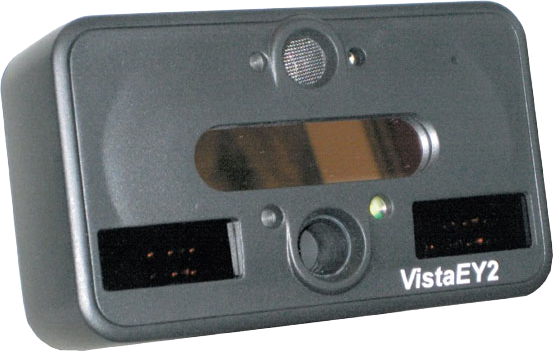

Vista EY2 Dual Iris and Face Camera

High Security Dual Iris Scanner/Face Camera Capable of Simultaneous Iris Acquisition from Subjects Wearing Eyewear.
Key Features:
- ISO/IEC 19794-5/6 compliant face and iris images
- Windows 7, CE, XP & Vista and Linux OS Support
- Standard USB 2.0
- Multi-wavelength IR illumination
- LiveEye anti-Spoof detection
- Multi-positional iris illumination for iris acquisition from subjects with eyewear
- Intelligent distance sensing technology for auto-acquisition
- Supported by Raven™ Biometric Enrollment Software
- Seamless data transfer to the Card Encoding Engine™
Description
The VistaEY2 is a combination iris scanner and face camera capable of simultaneous dual-iris acquisition and capture from subjects wearing eyewear. The iris camera features multi wavelength infra-red illumination, intelligent distance sensing technology, and multiple operational feedback features to enhance image quality and increase acquisition speed. Multi-positional iris illumination, ISO/IEC 19794-5/6 compliant images, and LiveEye anti-spoof detection software make the VistaEY2 ideal for enrolling and authenticating subjects in high security applications, such as national identity programs, law enforcement, border control, military and government identification, and resident alien identification.
Seamless Data Enrollment and Smart Card Personalization
The VistaEY2s is powered by Corvus Integration's Raven™ Software for unlimited biometric enrollment and biometric matching capacity. The data is seamlessly transferred from Raven software to the Card Encoding Engine™ Card Personalization Software for immediate in-line chip encoding onto a smart card. Combining smart card technology with biometrics provides stronger verification and authentication of the cardholder's identity and safer data storage. Seamlessly transfer your biometric data to Card Encoding Engine™ from CardLogix for the fastest and easiest in-line personalization of smart cards – no programming required.
Compliant with the Highest of Industry Standards
The VistaEY2 dual iris and face camera leverages state-of-the-art digital imaging technology, based on Vista Imaging's powerful & proven ViCAM®III Digital Imaging Engine, to support superior face and iris images that meet the highest of industry standards. Multi-wavelength infra-red illumination and intelligent distance sensing technology combine with other features to optimize iris image quality. The dual iris scanner features a high-resolution CMOS sensor with custom optics for ISO/IEC 19794-6 compliant, VGA iris images. The face camera features a 5MP CMOS image sensor with special optics and an integrated flash for low-light environments, providing clear, 19794-5-compliant, VGA images every capture.
Designed for High Security Identity Applications
The VistaEY2 is designed for high security identity applications that demand high reliability and greater functionality to confidently verify any subject's identity. VistaEY2 includes integrated LiveEye anti-spoof detection software to reliably detect living tissue from iris capture, thereby eliminating biometric fraud. It also includes audio input for unique voice recognition and multi-positional iris illumination for iris authentication on target subjects with eyewear. Images acquired with VistaEY2 maintain proven quality and ISO/IEC compliancy with every capture. For the highest security, load your biometric data onto a CardLogix smart card, like the M.O.S.T Card® or Credentsys® Card, for applications that require multi-factor authentication and secure data storage.
Rapid and Effortless Image Acquisition
The VistaEY2 is equipped with multiple features that accelerate and automate iris image acquisition. VistaEY2 features proprietary distance sensing circuitry with built-in audio input that detects the subject's distance from the camera. The camera includes an integrated cold mirror and tri-color RGB LED indicators that quickly lead the subject into the optimal distance and positioning from/to the camera, prompting auto-acquisition. Built-in audio output also provides optional voice instructions and audio feedback, while the dual iris capture capability and accurate focus analysis further speed up the acquisition process. VistaEY2 also includes an integrated tripod mount for easy assembly and hands-free enrollment. The VistaEY2 is perfect for portable or desktop multimodal biometric solutions as well as stationary or portable biometric kiosk solutions.
User Safety Guaranteed
VistaEY2 is a safe, ROHS compliant biometric device that meets international Eye Safety Requirements. Thanks to the camera's advanced distance sensing technology, the VistaEY2 automatically turns off the iris illumination if the target moves too close to the device. This protects the subject's eyes from unnecessary near infra red emissions.
Features
- Vista Imaging's powerful and proven ViCAM®III Digital Imaging Engine
- ISO/IEC 19794-6 compliant iris images at 15″ to target
- ISO/IEC 19794-5 compliant facial images at 24″ to target
- LiveEye anti-Spoof detection to ensure image-acquisition from live human tissue
- Multi-wavelength IR illumination
- Meets international Eye Safety Requirements
- Multi-positional iris illumination to authenticate target subjects wearing eyewear
- Intelligent distance-sensing technology for easy auto-acquisition
- Integrated cold mirror and RGB Tricolor LED for self-alignment feedback
- Integrated microphone and speaker for audio feedback, voice recording and audio instructions.
- Full-featured proven SDK's for quick and easy custom application integration
- Easy to hold and easy mounting to tripod
- Raven™ software supported
- idblox™ certified
Specifications
- Product Name: VistaEY2 Dual Iris & Face Camera
- Manufacturer: Vista Imaging, Inc.
- Distributor: Corvus Integration, Inc.
- Connection: USB 2.0
- Quality And Formats: ISO/IEC 19794-6 compliant iris images at 15″ to target; ISO/IEC 19794-5 compliant iris images at 24″ to target
- Dimensions: 139.7 x 88.9 x 50.8mm (5.5″ x 3.5″ x 2.0″)
- Weight: 0.3 kg (10.5oz.)
- Supported OS: Windows 7, CE, XP, & Vista, Linux and future Android OS support WinLogo certified
- Supported Software: Raven™ Biometric Enrollment & Verification Software by Corvus Integration; Card Encoding Engine by CardLogix; idblox™ approved
- Iris Image Size: 2 images, 640 x 480 pixels
- Eye Illumination: Multi-wavelength infrared
- CMOS Sensor Resolution: 5MP CMOS images sensor with special optics, 2560 x 1920 pixels
- Face Image Size: 240 x 1536 pixels
See also the Vista FA2 and Vista EY2-02 (EY2P).